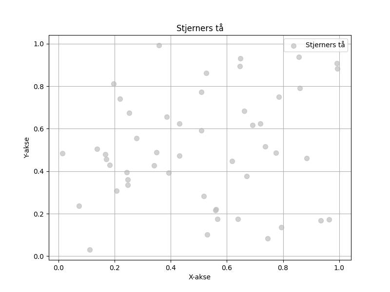

En lone krukke i skyens blå, der den danser med stjerners tå. Den svinger, den snur, i vindens lek, og spruter drømmer, søtt som mjukkekek.

import matplotlib.pyplot as plt
import numpy as np
# Dikt
dikt = """
En lone krukke i skyens blå,
der den danser med stjerners tå.
Den svinger, den snur, i vindens lek,
og spruter drømmer, søtt som mjukkekek.
"""
# Visualisering 1: Svingende krukke - Parametrisk plot
t = np.linspace(0, 2 * np.pi, 100)
x = np.sin(t)
y = np.cos(t)
plt.figure(figsize=(8, 6))
plt.plot(x, y, 'b-', label='Krukke i dans')
plt.scatter(0, 1, color='blue', s=100, label='Lone krukke')
plt.title('Svingende krukke')
plt.xlabel('X')
plt.ylabel('Y')
plt.grid(True)
plt.legend()
plt.savefig(output_path)
# Visualisering 2: Drømmer-flate - Scatter plot med farge
x = np.random.rand(100)
y = np.random.rand(100)
c = np.random.rand(100) # Farger for drømmer
plt.figure(figsize=(8, 6))
plt.scatter(x, y, c=c, cmap='viridis', s=50)
plt.title('Drømmer spruter')
plt.xlabel('Søthet')
plt.ylabel('Drømmer')
plt.colorbar(label='Fargeintensitet')
plt.savefig(output_path)
# Visualisering 3: Stjerners tå - Scatter plot
plt.figure(figsize=(8, 6))
plt.scatter(np.random.rand(50), np.random.rand(50), s=50, color='silver', alpha=0.7, label='Stjerners tå')
plt.title('Stjerners tå')
plt.xlabel('X-akse')
plt.ylabel('Y-akse')
plt.grid(True)
plt.legend()
plt.savefig(output_path)execution_ok=True fallback_used=False image_ok=True